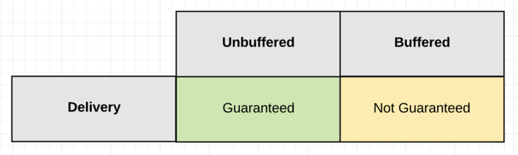
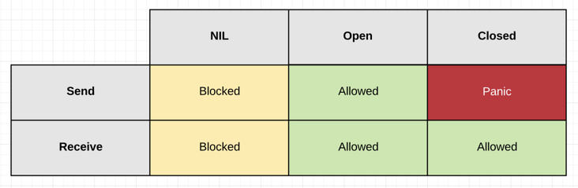
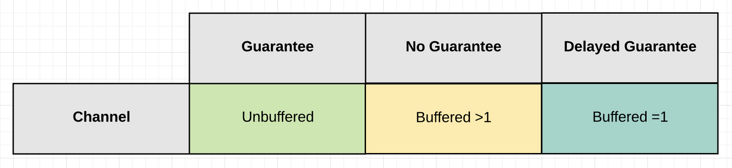
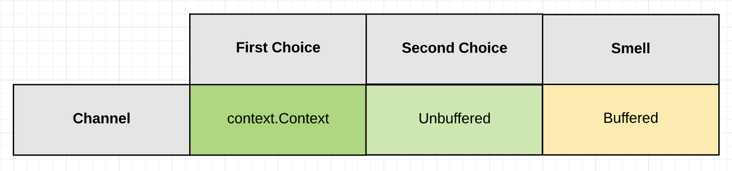

简介
当我第一次使用 Go 的 channels 工作的时候，我犯了一个错误，把 channels 考虑为一个数据结构。我把 channels 看作为 goroutines 之间提供自动同步访问的队列。这种结构上的理解导致我写了很多不好且结构复杂的并发代码。
随着时间的推移，我认识到最好的方式是忘记 channels 是数据结构，转而关注它的行为。所以现在谈论到 channels，我只考虑一件事情：signaling（信号）。一个 channel 允许一个 goroutine 给另外一个发特定事件的信号。信号是使用 channel 做一切事情的核心。将 channel 看作是一种信号机制，可以让你写出明确定义和精确行为的更好代码。
为了理解信号怎样工作，我们必须理解以下三个特性：
- 交付保证
- 状态
- 有数据或无数据
这三个特性共同构成了围绕信号的设计哲学，在讨论这些特性之后，我将提供一系列代码示例，这些示例将演示使用这些属性的信号。
交付保证
交付保证基于一个问题：“我是否需要保证由特定的 goroutine 发送的信号已经被接收？”
换句话说，我们可以给出清单1的示例：
清单1
1 | 01 go func() { |
发送的 goroutine 是否需要保证在第五行中发送给 channel 的 paper，在继续执行前， 会被第二行的 goroutine 接收。
基于这个问题的答案，你将知道使用两种类型的 channels 中的哪种：无缓冲或有缓冲。每个channel围绕交付保证提供不同的行为。
图1

保证很重要，并且如果你不这样认为，我有很多东西兜售给你。当然，我想开个玩笑，当你的生活没有保障的时候你不会害怕吗？在编写并发代码时，对是否需要一项保证有很强的理解是至关重要的。随着继续，你将学会如何做决策。
状态
一个 channel 的行为直接被它当前的状态所影响。一个channel 的状态是：nil，open 或 closed。
下面的清单2展示了怎样声明或把一个 channel放进这三个状态。
清单2
1 | // ** nil channel |
状态决定了怎样send（发送）和receive（接收）操作行为。
信号通过一个 channel 发送和接收。不要说读和写，因为 channels 不执行 I/O。
图2

当一个 channel 是 nil 状态，任何试图在 channel 的发送或接收都将会被阻塞。当一个 channel 是在 open 状态，信号可以被发送和接收。当一个 channel 被置为 closed 状态，信号将不在被发送，但是依然可以接收信号。
这些状态将在你遭遇不同的情况的时候可以提供不同的行为。当结合状态和交付保证，作为你设计选择的结果，你可以分析你承担的成本/收益。你也可以仅仅通过读代码快速发现错误，因为你懂得 channel 将表现出什么行为。
有数据和无数据
最后的信号特性需要考虑你是否需要信号有数据或者无数据。
在一个 channel 中有数据的信号被执行一个发送。
清单3
1 | 01 ch <- "paper" |
当你的信号有数据，它通常是因为：
- 一个 goroutine 被要求启动一个新的 task。
- 一个 goroutine 传达一个结果。
无数据信号通过关闭一个 channel。
清单4
1 | 01 close(ch) |
当信号没有数据的时候，它通常是因为：
- 一个 goroutine 被告知停止它正在做的事情。
- 一个 goroutine 报告它们已经完成，没有结果。
- 一个 goroutine 报告它已经完成处理并且关闭。
这些规则也有例外，但这些都是主要的用例，并且我们将在本文中重点讨论这些问题。我认为这些规则例外的情况是最初的代码味道。
无数据信号的一个好处是一个单独的 goroutine 可以立刻给很多 goroutines 信号。有数据的信号通常是在 goroutines 之间一对一的交换数据。
有数据信号
当你使用有数据信号的时候，依赖于你需要保证的类型，有三个channel配置选项可以选择。
图3：有数据信号

这三个 channel 选项是：Unbuffered, Buffered >1 或 Buffered =1。
- 有保证
- 一个无缓冲的channel给你保证被发送的信号已经被接收。
- 因为信号接收发生在信号发送完成之前。
- 一个无缓冲的channel给你保证被发送的信号已经被接收。
- 无保证
- 一个
size > 1的有缓冲的 channel 不会保证发送的信号已经被接收。- 因为信号发送发生在信号接送完成之前。
- 一个
- 延迟保证
- 一个
size = 1的有缓冲 channel 提供延迟保证。它可以保证先前发送的信号已经被接收。- 因为第一个接收信号，发生在第二个完成的发送信号之前。
- 一个
缓冲大小绝对不能是一个随机数字，它必须是为一些定义好的约束而计算出来的。在计算中没有无穷大，无论是空间还是时间，所有的东西都必须要有良好的定义约束。
无数据信号
无数据信号主要用于取消，它允许一个 goroutine 发送信号给另外一个来取消它们正在做的事情。取消可以被有缓冲和无缓冲的channels实现，但是在没有数据发送的情况下使用缓冲 channel 会更好。
图4：无数据信号

内建的函数 close 被用于无数据信号。正如上面状态章节所解释的那样，你依然可以在channel关闭的时候接收信号。实际上，在一个关闭的channel上的任何接收都不会被阻塞，并且接收操作将一直返回。
在大多数情况下，你想使用标准的库 context 包来实现无数据信号。context 包使用一个无缓冲channel传递信号以及内建函数close发送无数据信号。
如果你选择使用你自己的 channel 而不是 context包来取消，你的channel 应该是chan struct{} 类型，这是一种零空间的惯用方式，用来表示一个信号仅仅用于信号传递。
场景
有了这些特性，更进一步理解它们在实践中怎样工作的最好方式就是运行一系列的代码场景。当我在读写 channel 基础代码的时候，我喜欢把goroutines想像成人。这个形象对我非常有帮助，我将把它用作下面的辅助工具。
有数据信号 - 保证 - 无缓冲 Channels
当你需要知道一个被发送的信号已经被接收的时候，有两种情况需要考虑。它们是 等待任务和等待结果。
场景1 - 等待任务
考虑一下作为一名经理，需要雇佣一名新员工。在本场景中，你想你的新员工执行一个任务，但是他们需要等待直到你准备好。这是因为在他们开始前你需要递给他们一份报告。
清单5
1 | 01 func waitForTask() { |
在清单5的第2行，一个带有属性的无缓冲channel被创建，string 数据将与信号一起被发送。在第4行，一名员工被雇佣并在开始工作前，被告诉等待你的信号【在第5行】。第5行是一个 channel 接收，引起员工阻塞直到等到你发送的报告。一旦报告被员工接收，员工将执行工作并在完成的时候可以离开。
你作为经理正在并发的与你的员工工作。因此在第4行你雇佣员工之后，你发现你自己需要做什么来解锁并且发信号给员工（第12行）。值得注意的是，不知道要花费多长的时间来准备这份报告（paper）。
最终你准备好给员工发信号，在第14行，你执行一个有数据信号，数据就是那份报告。由于一个无缓冲的channel被使用，你得到一个保证就是一旦你操作完成，员工就已经接收到了这份报告。接收发生在发送之前。
技术上你所知道的一切就是在你的channel发送操作完成的同时员工接收到了这份报告。在两个channel操作之后，调度器可以选择执行它想要执行的任何语句。下一行被执行的代码是被你还是员工是不确定的。这意味着使用print语句会欺骗你关于事件的执行顺序。
场景2 - 等待结果
在下一个场景中，事情是相反的。这时你想你的员工一被雇佣就立即执行他们的任务。然后你需要等待他们工作的结果。你需要等待是因为在你继续前你需要他们发来的报告。
清单6
在线演示地址
1 | 01 func waitForResult() { |
成本/收益
无缓冲 channel 提供了信号被发送就会被接收的保证，这很好，但是没有任何东西是没有代价的。这个成本就是保证是未知的延迟。在等待任务场景中，员工不知道你要花费多长时间发送你的报告。在等待结果场景中，你不知道员工会花费多长时间把报告发送给你。
在以上两个场景中，未知的延迟是我们必须面对的，因为它需要保证。没有这种保证行为，逻辑就不会起作用。
有数据信号 - 无保证 - 缓冲 Channels > 1
场景1 - 扇出（Fan Out）
扇出模式允许你抛出明确定义数量的员工在同时工作的问题上。由于你每个任务都有一个员工，你很明确的知道你会接收多少个报告。你可能需要确保你的盒子有适量的空间来接收所有的报告。这就是你员工的收益，不需要等待你来提交他们的报告。但是他们确实需要轮流把报告放进你的盒子，如果他们几乎同一时间到达盒子。
再次假设你是经理，但是这次你雇佣一个团队的员工，你有一个单独的任务，你想每个员工都执行它。作为每个单独的员工完成他们的任务，他们需要给你提供一张报告放进你桌子上的盒子里面。
清单7
演示地址
1 | 01 func fanOut() { |
在清单7的第3行，一个带有属性的有缓冲channel被创建，string 数据将与信号一起被发送。这时，由于在第2行声明的 emps 变量，将创建有 20个缓冲的 channel。
在第5行和第10行之间，20 个员工被雇佣，并且他们立即开始工作。在第7行你不知道每个员工将花费多长时间。这时在第8行，员工发送他们的报告，但这一次发送不会阻塞等待接收。因为在盒子里为每位员工准备的空间，在 channel 上的发送仅仅与其他在同一时间想发送他们报告的员工竞争。
在 12 行和16行之间的代码全部是你的操作。在这里你等待20个员工来完成他们的工作并且发送报告。在12行，你在一个循环中，在 13 行你被阻塞在一个 channel 等待接收你的报告。一旦报告接收完成，报告在14被打印，并且本地的计数器变量被消耗来表明一个员工意见完成了他的工作。
场景2 - Drop
Drop模式允许你在你的员工在满负荷的时候丢掉工作。这有利于继续接受客户端的工作，并且从不施加压力或者是这项工作可接受的延迟。这里的关键是知道你什么时候是满负荷的，因此你不承担或过度承诺你将尝试完成的工作量。通常集成测试或度量可以帮助你确定这个数字。
假设你是经理，你雇佣了单个员工来完成工作。你有一个单独的任务想员工去执行。当员工完成他们任务时，你不在乎知道他们已经完成了。最重要的是你能或不能把新工作放入盒子。如果你不能执行发送，这时你知道你的盒子满了并且员工是满负荷的。这时候，新工作需要丢弃以便让事情继续进行。
清单8
演示地址
1 | 01 func selectDrop() { |
在清单8的第3行，一个有属性的有缓冲 channel 被创建，string 数据将与信号一起被发送。由于在第2行声明的cap 常量，这时创建了有5个缓冲的 channel。
从第5行到第9行，一个单独的员工被雇佣来处理工作，一个 for range被用于循环处理 channel 的接收。每次一份报告被接收，在第7行被处理。
在第11行和19行之间，你尝试发送20分报告给你的员工。这时一个 select语句在第14行的第一个case被用于执行发送。因为default从句被用于第16行的select语句。如果发送被堵塞，是因为缓冲中没有多余的空间，通过执行第17行发送被丢弃。
最后在第21行，内建函数close被调用来关闭channel。这将发送没有数据的信号给员工表明他们已经完成，并且一旦他们完成分派给他们的工作可以立即离开。
成本/收益
有缓冲的 channel 缓冲大于1提供无保证发送的信号被接收到。离开保证是有好处的，在两个goroutine之间通信可以降低或者是没有延迟。在扇出场景，这有一个有缓冲的空间用于存放员工将被发送的报告。在Drop场景，缓冲是测量能力的，如果容量满，工作被丢弃以便工作继续。
在两个选择中，这种缺乏保证是我们必须面对的，因为延迟降低非常重要。0到最小延迟的要求不会给系统的整体逻辑造成问题。
有数据信号 - 延迟保证- 缓冲1的channel
场景1 - 等待任务
清单9
演示地址
1 | 01 func waitForTasks() { |
在清单9的第2行，一个带有属性的一个缓冲大小的 channel 被创建，string 数据将与信号一起被发送。在第4行和第8行之间，一个员工被雇佣来处理工作。for range被用于循环处理 channel 的接收。在第6行每次一份报告被接收就被处理。
在第10行和13行之间，你开始发送你的任务给员工。如果你的员工可以跑的和你发送的一样快，你们之间的延迟会降低。但是每次发送你成功执行，你需要保证你提交的最后一份工作正在被进行。
在最后的第15行，内建函数close被调用关闭channel，这将会发送无数据信号给员工告知他们工作已经完成，可以离开了。尽管如此，你提交的最后一份工作将在 for range中断前被接收。
无数据信号 - Context
在最后这个场景中，你将看到从 Context 包中使用 Context值怎样取消一个正在运行的goroutine。这所有的工作是通过改变一个已经关闭的无缓冲channel来执行一个无数据信号。
最后一次你是经理，你雇佣了一个单独的员工来完成工作，这次你不会等待员工未知的时间完成他的工作。你分配了一个截止时间，如果你的员工没有按时完成工作，你将不会等待。
清单10
演示地址
1 | 01 func withTimeout() { |
在清单10的第2行，一个时间值被声明，它代表了员工将花费多长时间完成他们的工作。这个值被用在第4行来创建一个50毫秒超时的 context.Context值。context包的WithTimeout函数返回一个 Context 值和一个取消函数。
context包创建一个goroutine，一旦时间值到期，将关闭与Context值关联的无缓冲channels。不管事情如何发生，你需要负责调用cancel函数。这将清理被Context创建的东西。cancel被调用不止一次是可以的。
在第5行，一旦函数中断，cancel函数被 deferred 执行。在第7行，1个缓冲的channels被创建，它被用于被员工发送他们工作的结果给你。在第09行和12行，员工被雇佣兵立即投入工作，你不需要指定员工花费多长时间完成他们的工作。
在第14行和20行之间，你使用 select语句来在两个channels接收。在第15行的接收，你等待员工发送他们的结果。在第18行的接收，你等待看context包是否正在发送信号50毫秒的时间到了。无论你首先收到哪个信号，都将有一个被处理。
这个算法的一个重要方面是使用一个缓冲的channels。如果员工没有按时完成，你将离开而不会给员工任何通知。对于员工而言，在第11行他将一直发送他的报告，你在或者不在那里接收，他都是盲目的。如果你使用一个无缓冲channels，如果你离开，员工将一直阻塞在那尝试你给发送报告。这会引起goroutine泄漏。因此一个缓冲的channels用来防止这个问题发生。
总结
当使用 channels（或并发） 时，在保证，channel状态和发送过程中信号属性是非常重要的。它们将帮助你实现你并发程序需要的更好的行为以及你写的算法。它们将帮助你找出bug和闻出潜在的坏代码。
在本文中，我分享了一些程序示例来展示信号属性工作在不同的场景中。凡事都有例外，但是这些模式是非常良好的开端。
作为总结回顾下这些要点，何时，如何有效地思考和使用channels：
语言机制
- 使用 channels 来编排和协作 goroutines：
- 关注信号属性而不是数据共享
- 有数据信号和无数据信号
- 询问它们用于同步访问共享数据的用途
- 有些情况下，对于这个问题，通道可以更简单一些，但是最初的问题是。
- 无缓冲 channels：
- 接收发生在发送之前
- 收益：100%保证信号被接收
- 成本：未知的延迟，不知道信号什么时候将被接收。
- 有缓冲 channels：
- 发送发生在接收之前。
- 收益：降低信号之间的阻塞延迟。
- 成本：不保证信号什么时候被接收。
- 缓冲越大，保证越少。
- 缓冲为1可以给你一个延迟发送保证。
- 关闭的 channels：
- 关闭发生在接收之前（像缓冲）。
- 无数据信号。
- 完美的信号取消或截止。
- nil channels：
- 发送和接收都阻塞。
- 关闭信号。
- 完美的速度限制或短时停工。
设计哲学
- 如果在 channel上任何给定的发送能引起发送 goroutine 阻塞：
- 不允许使用大于1的缓冲channels。
- 缓冲大于1必须有原因/测量。
- 必须知道当发送 goroutine阻塞的时候发生了什么。
- 不允许使用大于1的缓冲channels。
- 如果在 channel 上任何给定的发送不会引起发送阻塞：
- 每个发送必须有确切的缓冲数字。
- 扇出模式。
- 有缓冲测量最大的容量。
- Drop 模式。
- 每个发送必须有确切的缓冲数字。
- 对于缓冲而言，少即是多。
- 当考虑缓冲的时候，不要考虑性能。
- 缓冲可以帮助降低信号之间的阻塞延迟。
- 降低阻塞延迟到0并不一定意味着更好的吞吐量。
- 如果一个缓冲可以给你足够的吞吐量，那就保持它。
- 缓冲大于1的问题需要测量大小。
- 尽可能找到提供足够吞吐量的最小缓冲